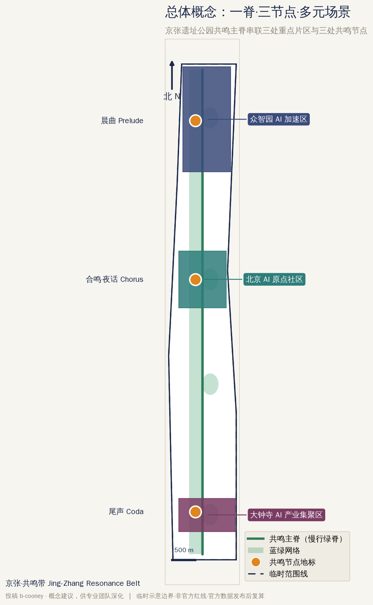
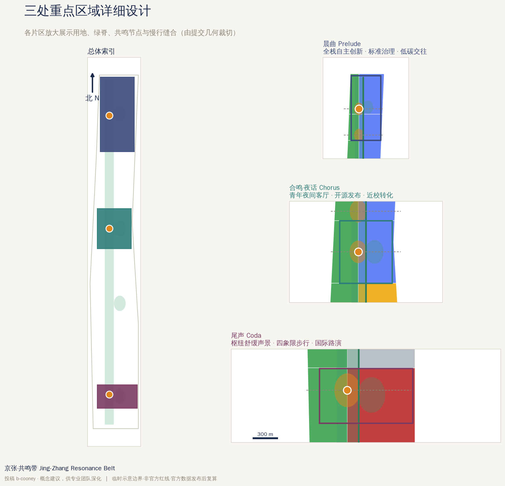
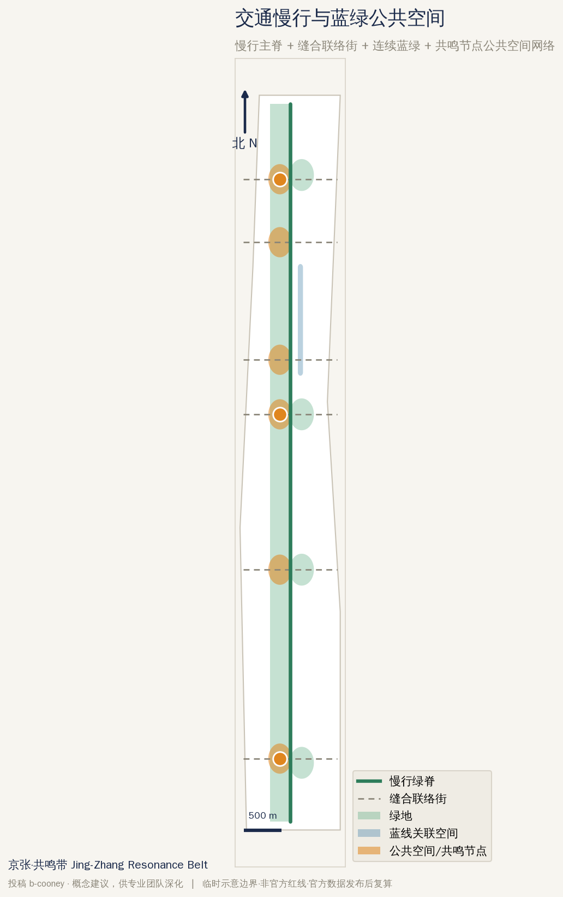
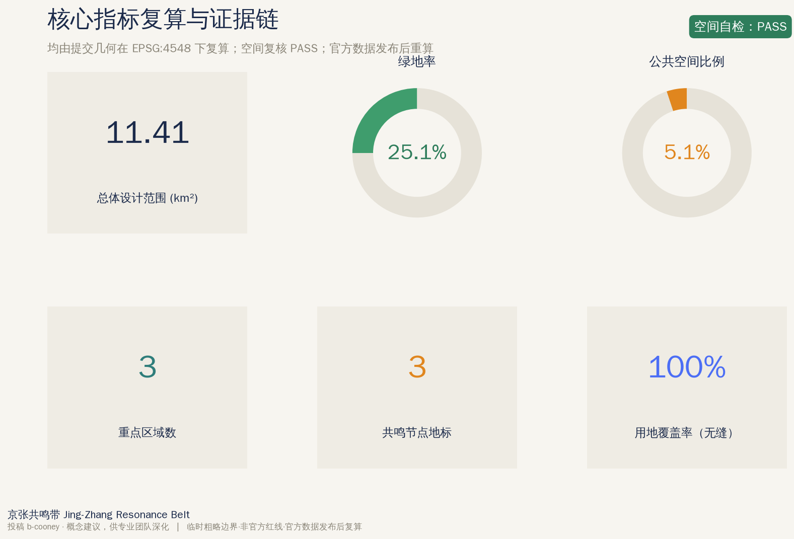

生成式自适应声景 Live generative soundscape (offline, Web Audio)
非自动播放·音量受限·仅用非个人化聚合信号（时段/人流）演示自适应生成。移动或点击滑块，观察状态随语境缓慢变化。 Non-autoplay, volume-limited. Uses only non-personal aggregate signals (time/crowd) to demo adaptive generation. Move the sliders to watch the state morph slowly with context.
当前状态 Current state: RESTORE —
实现（对齐设计文档）：14 维连续参数向量的功能状态（RESTORE/FOCUS/SOCIAL/VITALIZE/BUFFER/NIGHT，RESTORE 与文档示例一致）；SENSE→INTERPRET→TARGET→COMPOSE→RENDER→LISTEN→ADAPT→LOG 闭环；音高与和声场的近期记忆抑制（随机→变化，记忆→非重复，约束→地方性）；层族：基底/脉动/音簇/自然纹理/空间手势/遮蔽/过渡；参数按不同速率缓慢渐变并带迟滞；LISTEN 测得负荷后以“声学克制”优先于加大音量。 Implementation (aligned to the design doc): functional states as 14-parameter vectors (RESTORE/FOCUS/SOCIAL/VITALIZE/BUFFER/NIGHT; RESTORE matches the doc example); a SENSE→INTERPRET→TARGET→COMPOSE→RENDER→LISTEN→ADAPT→LOG loop; recent-history suppression on pitch and chord field (randomness→variation, memory→non-repetition, constraints→identity); layer families foundation/pulse/tonal-cells/organic/spatial-gesture/masking/transition; parameters morph slowly on different schedules with hysteresis; LISTEN measures output load and ADAPT applies acoustic restraint before raising level.
总览地图 · Overview Map

三层范围 · Three-Level Scope
统筹研究范围约 43.6 km²、总体设计范围约 11.4 km²、重点区域约 368.4 ha（三处）。 Coordinated research ~43.6 km², overall design ~11.4 km², key detailed-design ~368.4 ha (three areas).
重点区域 · Key Areas

用地分区 · Land Use

交通慢行与蓝绿公共空间 · Mobility & Blue-Green Public Space

建筑 · Buildings
代表性更新/保留建筑基底为示意；建筑高度、强度等待正式控规条件确认。 Representative renewal/retained footprints are indicative; height and intensity await official regulatory conditions.
更新项目 · Renewal Projects
- JZ-01 遗址公园慢行断点缝合 heritage-park slow-mobility stitching
- JZ-03 原点社区夜合共鸣客厅 Chorus resonance living room
- JZ-05 生成式声景公共设施 + 端侧算力节点 generative-soundscape facilities + edge-compute
- JZ-06 全球 AI 活动周公共路线 Global AI Week public route
AI 场景 · AI Scenarios
01 夜合社区共鸣客厅 Chorus resonance commons02 尾声枢纽舒缓声景 Coda transit calm09 AI 健康服务导航 AI health navigation11 声景开放 API 日 soundscape open-API day核心指标 · Core Metrics

任务覆盖 · Task Coverage
agent.1 ✓ agent.2 ✓ agent.3 ✓ agent.4 ✓ agent.5 ✓ agent.6 ✓
公告 1.3/1.4/1.5 与 agent.1–6 全部在 compliance_matrix.json 中映射。 Announcement 1.3/1.4/1.5 and agent.1–6 all mapped in compliance_matrix.json.
自检状态 · Self-Check
空间复核 PASS 内容校验：0 错误；临时边界提示保留。 Content validation: 0 errors; provisional-boundary notice retained.
来源 · Sources
官方公告、面向智能体任务书、场地包、公开来源登记、声景健康循证（Aletta 2018 等）、ISO 12913 声景框架——完整见 sources.json。 Official announcement, agent taskbook, site package, public-source registry, soundscape health evidence (Aletta 2018 et al.), ISO 12913 framework — full list in sources.json.
假设 · Assumptions
提交几何为临时粗略边界（provisional_constraint），非官方红线；官方数据发布后重算。声景状态-感受映射为需现场验证的设计假设。 Submitted geometry is a provisional rough boundary (provisional_constraint), not an official redline; recalculate on official data. Soundscape state→feeling mappings are site-validated design hypotheses.